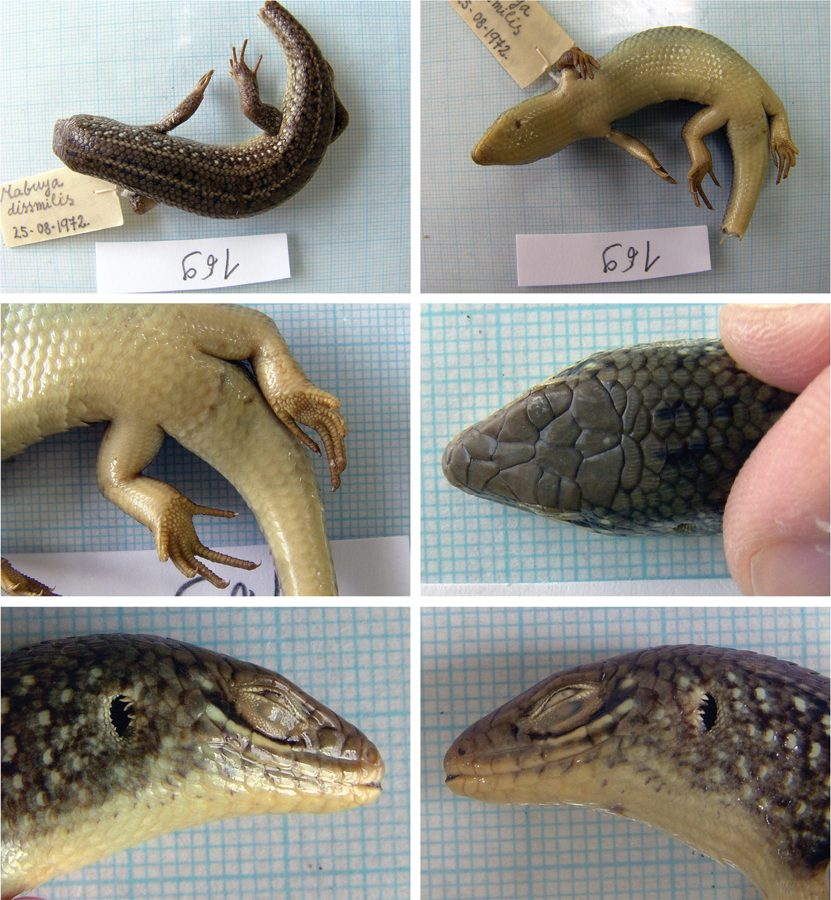

स्ट्राइप्ड ग्रास स्किंकStriped Grass Skink
Eutropis dissimilis · Scincidae · REP-0046

- Scientific name वैज्ञानिक नाम
- Eutropis dissimilis (Hallowell, 1857)
- Family कुल
- Scincidae
- Hindi हिंदी
- स्ट्राइप्ड ग्रास स्किंक
- Local names स्थानीय नाम
- striped grass skink, straipd grass skink, striped skink, patteedaar sarata
- Status here यहाँ की स्थिति
- native
- Movement आवागमन
- Resident, here all year
- Known from कहाँ दर्ज
- Others have published records from the wider Awadh–Purvanchal plain, none yet from Basti–Ayodhya अवध–पूर्वांचल से दूसरों के प्रकाशित अभिलेख, बस्ती–अयोध्या से अभी नहीं
- IUCN IUCN
- not evaluated
- Review समीक्षा
- not yet reviewed
When to look कब देखें
Present all year. साल भर मौजूद।
Tell it apart from इनसे अलग पहचानें
स्ट्राइप्ड ग्रास स्किंक / Striped Grass Skink
Eutropis dissimilis (Hallowell, 1857) — Scincidae
स्ट्राइप्ड ग्रास स्किंक — यह नदियों के किनारे रेतीले कछारों, कांस और मूंज की घासों में रहने वाली एक फुर्तीली धारीदार छिपकली है। इसकी पीठ पर तीन चमकदार हल्के हरे या सफेद रंग की लंबी धारियां होती हैं जिनके किनारों पर काले धब्बे बने होते हैं। यह रेतीली जमीन पर बहुत तेज दौड़ती है और खतरा होने पर तुरंत घास के घने झुरमुट में समा जाती है। यह जमीन के कीड़ों का शिकार करती है।
Quick Identification त्वरित पहचान
| Feature | Description |
|---|---|
| Body size | Medium-sized, slender skink with powerful limbs and an elongated tail |
| Dorsal pattern | Olive-brown with 3 prominent whitish or pale green longitudinal stripes bordered with black (Smith 1935) |
| Flank pattern | Broad dark brownish lateral band adorned with white spots or dashed lines |
| Dorsal scalation | Scales on the back carry 2 or 3 distinct low keels (Sharma 2002) |
| Ventral surface | Uniformly pale greenish-white or yellowish, smooth and glossy |
| Midbody scales | Arranged in 34 to 38 rows around the body circumference |
Field tip: Walk along sandy river embankments and tall Kans grass (Saccharum spontaneum) clumps on sunny mornings.
हिंदी: इसकी पीठ पर तीन साफ चमकदार सफेद या हल्की हरी धारियां होती हैं। यह नदी के किनारे रेतीली जमीन और कांस की घास में तेज दौड़ती दिखाई देती है।
Morphology आकारिकी
The head is distinct from the neck, with a moderately pointed snout. The ear opening is oval, smaller than the eye, bearing 2 to 4 short, rounded lobules along its anterior margin. The lower eyelid carries an undivided semi-transparent disc. The supranasals are in contact with one another behind the rostral. The frontonasal is broader than long. Prefrontals usually form a median suture. The frontal is longer than the frontoparietals and interparietal combined. Dorsal scales are subequal, imbricate, and characterized by 2 or 3 distinct longitudinal keels (Sharma 2002). The tail is slender, cylindrical, and roughly one and a half times the length of the head and body.
हिंदी: इसका सिर नुकीला और शरीर सुगठित होता है। कान के छेद पर छोटे उभार होते हैं। पीठ के शल्कों पर 2 या 3 धारियां होती हैं और पूंछ काफी लंबी होती है।
Behaviour & Ecology व्यवहार और पारिस्थितिकी
This skink is a specialist inhabitant of sandy alluvial floodplains, riverine terraces, and riparian grasslands dominated by Saccharum and Typha. It is strictly diurnal and exhibits exceptionally rapid cursorial locomotion, dashing between vegetative cover across bare sandy substrate with extreme speed. It basks on elevated sand hummocks or dry driftwood during the morning to elevate its body temperature. When alarmed, it dives into the base of dense grass tussocks or burrows into loose sand using vigorous lateral body undulations. It does not enter water voluntarily but can swim short distances across flooded channels to escape inundation during seasonal river rises.
हिंदी: यह नदी के कछार की रेतीली जमीन पर रहना पसंद करती है। खतरे की आहट पाते ही यह पलक झपकते ही रेत या कांस के घने झुरमुट में छिप जाती है।
Life Cycle / Phenology जीवन चक्र
Breeding occurs primarily during the spring and pre-monsoon period from April to July. Territorial males engage in active pursuit of females across riverine sandbars. The species is oviparous, with females laying clutches of 4 to 8 soft-shelled white eggs (Sharma 2002) in shallow burrows excavated in moist sandy banks above the seasonal floodline. Egg deposition timing ensures that incubation is completed before peak monsoon flood levels inundate low-lying river islands. The incubation period lasts approximately four to six weeks (Sharma 2002). Hatchlings emerge during early monsoon flushes of riverbank orthopterans.
हिंदी: अप्रैल से जुलाई के बीच इनका प्रजनन काल होता है। मादा नदी के ऊंचे रेतीले किनारों पर 4 से 8 सफेद अंडे जमीन में गड्ढा खोदकर देती है। बाढ़ आने से पहले बच्चे बाहर आ जाते हैं।
Host Plants or Prey आहार
The diet consists of terrestrial and semi-aquatic invertebrates that inhabit riparian sandbanks and grassy borders. It feeds on riverbank grasshoppers, field crickets, tiger beetle adults and larvae, ground beetles, and wolf spiders. It also captures dipteran flies resting on damp mud, small caterpillars, and riverine termites. Its swift sprinting ability enables it to chase down fast-running prey across open sand.
हिंदी: इसका भोजन नदी किनारे मिलने वाले टिड्डे, झींगुर, रेतीले मैदान की मकड़ियां, भृंग और छोटे उड़ने वाले कीड़े हैं।
Predators / Natural Enemies शत्रु
Common predators along riverine sandbanks include aquatic and semi-aquatic snakes such as the Checkered Keelback (Fowlea piscator) and Buff-striped Keelback (Amphiesma stolatum). Avian predators include the Black Kite (Milvus migrans), herons, and egrets patrolling exposed sandbars. Monitor lizards like the Bengal Monitor (Varanus bengalensis) and stray domestic dogs also dig out skinks from loose sand retreats.
हिंदी: नदी किनारे के जलसांप जैसे पनिहा सांप, बगुले, चील और गोह रेतीले कछारों में इस छिपकली का शिकार करते हैं।
Agricultural / Human Relevance कृषि प्रासंगिकता
In the riverine agricultural belt of the Ghaghara and Kuwana floodplains (diyara and kadar tracts), this skink provides biological pest control in seasonal cucurbit and riverbed vegetable farming (parwal, watermelon, musk melon). By preying on riverbank beetles, crickets, and cutworms that attack melon vines, it supports sustainable riverbed farming. It is completely non-venomous and harmless to humans and livestock.
हिंदी: कछार में तरबूज, खरबूजा और परवल की खेती करने वाले किसानों के लिए यह बहुत फायदेमंद है क्योंकि यह फसलों को नुकसान पहुंचाने वाले कीड़ों को खाती है।
Expected Locally स्थानीय रूप से अपेक्षित
Not a field record. Written from published accounts for eastern Uttar Pradesh. No confirmed local sighting yet — if you have seen it, that is what the atlas needs.
अभी तक स्थानीय पुष्टि नहीं। यह विवरण प्रकाशित स्रोतों से है, किसी अवलोकन से नहीं।
In Basti and Ayodhya districts, optimal search zones include the sandy floodplains and embankment grasslands along the Ghaghara, Sarayu, and Kuwana rivers. Surveys conducted along sandy berms with tall Kans grass clumps during warm sunny mornings from April to August offer the best observation potential. GBIF holds published records from the wider Awadh–Purvanchal plain, none yet from Basti–Ayodhya. A first confirmed local record would be verified through clear photographic documentation showing the three pale dorsal stripes and 2–3 keeled scales submitted to the project portal.
Distribution वितरण
Global range: Northern Indian subcontinent, ranging across Pakistan (Indus basin), northern India, and southern Nepal.
In India: Distributed across the plains of Punjab, Haryana, Rajasthan, Uttar Pradesh, Bihar, and West Bengal.
In Uttar Pradesh: Recorded along major river systems including the Yamuna, Ganga, and Ghaghara basins.
In Basti district / eastern UP: Expected along the extensive alluvial riverine tracts and sandy floodplains of the Ghaghara and Kuwana rivers.
हिंदी: यह उत्तरी भारत, पाकिस्तान और नेपाल के नदी मैदानों में पाई जाती है। उत्तर प्रदेश की बड़ी नदियों के किनारे रेतीले इलाकों में इसका विस्तार है।
Research Questions शोध प्रश्न
- How do seasonal monsoon inundations affect the spatial distribution and survival of skink populations on river sandbars? / मानसूनी बाढ़ से नदी के रेतीले टापुओं पर इस छिपकली की संख्या और बचाव पर क्या असर पड़ता है?
- What are the key microhabitat preferences that separate this species from Bronze Grass Skink in riparian transition zones? / नदी के किनारों पर यह छिपकली ब्रॉन्ज ग्रास स्किंक से अपने रहने की जगह का बंटवारा कैसे करती है?
- How deep do these skinks burrow into loose sand to avoid peak midday surface extreme midday summer heat?
- What role do Kans grass (Saccharum spontaneum) root systems play in stabilizing breeding burrow sites?
- Can local fishermen and riverbed farmers assist in mapping the seasonal presence of this striped skink along the Ghaghara? / क्या कछारी किसान घाघरा नदी के किनारे इस छिपकली को दर्ज करने में मदद कर सकते हैं?
Similar Species मिलती-जुलती प्रजातियाँ
| Species | How to tell apart | हिंदी | |
|---|---|---|---|
| Bronze Grass Skink \ | Eutropis macularia | Smaller, lacks distinct pale longitudinal stripes; dorsal scales have 5 to 7 sharp keels, and males display scarlet throats (Smith 1935) | ब्रॉन्ज ग्रास स्किंक पर साफ धारियां नहीं होतीं, इसके शल्कों पर 5-7 धारियां होती हैं और नर का गला लाल होता है |
| Common Keeled Skink \ | Eutropis carinata | Much larger and stockier, bronze-brown without pale vertebral stripes; typically carries 3 keels on dorsal scales (Sharma 2002) | कॉमन कील्ड स्किंक काफी भारी होती है और इसकी पीठ पर चमकदार धारियां नहीं पाई जातीं |
| Oriental Garden Lizard \ | Calotes versicolor | Non-glossy agamid lizard with crest of spine-like scales on neck and back; arboreal perching habit | गिरगिट की त्वचा सूखी और खुरदुरी होती है, गर्दन पर कांटेदार कलगी होती है और यह झाड़ियों पर चढ़ता है |
Field rule: Medium-sized sandy skink with three prominent pale greenish-white longitudinal stripes running down an olive-brown back along riverbank grasslands.
हिंदी: नदी किनारे पाई जाने वाली मध्यम आकार की छिपकली जिसकी पीठ पर तीन साफ चमकदार धारियां होती हैं।
Taxonomy & Classification वर्गीकरण
Original description. Hallowell (1857), Notice of some new and rare species of Scincidae in the collection of the Academy of Natural Sciences of Philadelphia, Proceedings of the Academy of Natural Sciences of Philadelphia, 9, p. 215; type locality: Bengal, India.
Subspecies. Monotypic; no valid subspecies are currently recognized across its northern Gangetic range.
Family and order placement. Placed in the genus Eutropis Fitzinger, 1843, family Scincidae, suborder Sauria, order Squamata.
Phylogenetic notes. Adapted to the specialized riverine and semi-arid grasslands of northern South Asia, occupying a niche comparable to African striped skinks.
IUCN status rationale. Not evaluated by the IUCN Red List; abundant in appropriate riparian habitats across the Indo-Gangetic river system.
हिंदी: इसका वर्णन एडवर्ड हैलोवेल ने 1857 में फिलाडेल्फिया की अकादमी में किया था। यह यूट्रोपिस वंश का सदस्य है।
Photo Gallery फोटो गैलरी
No photos yet — add field photos to media/species/striped_grass_skink/ and run node scripts/sync_photos.js.
Photos needed आवश्यक फोटो
- [ ] Habitat view showing typical local microhabitat (प्राकृतिक वास का विस्तृत परिदृश्य)
- [ ] Dorsal view showing three distinct pale longitudinal stripes (पीठ की तीन चमकदार धारियों का दृश्य)
- [ ] Individual active on open riverine sandbank (रेतीले कछार पर दौड़ती छिपकली)
- [ ] Close-up of head showing ear lobules and prefrontal scales (सिर और कान के उभारों का क्लोज-अप दृश्य)
References संदर्भ
- Original description: Hallowell, 1857 — see GBIF.
- Smith, M. A. (1935). The Fauna of British India, Including Ceylon and Burma. Reptilia and Amphibia. Vol. II.—Sauria. Taylor and Francis, London.
- Sharma, R. C. (2002). The Fauna of India and the Adjacent Countries. Reptilia (Sauria). Volume II. Zoological Survey of India, Kolkata.
- GBIF Occurrence Data — Eutropis dissimilis, India (2025).
Source file: species/fauna/reptiles/striped_grass_skink.md